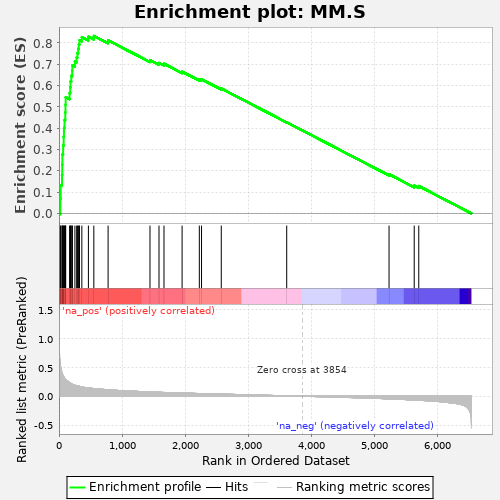

| | | Dataset | al10_v_al2 |
| Phenotype | NoPhenotypeAvailable |
| Upregulated in class | na_pos |
| GeneSet | MM.S |
| Enrichment Score (ES) | 0.83284235 |
| Normalized Enrichment Score (NES) | 2.5125768 |
| Nominal p-value | 0.0 |
| FDR q-value | 0.0 |
| FWER p-Value | 0.0 |
Table: GSEA Results Summary

Fig 1: Enrichment plot: MM.S
Profile of the Running ES Score & Positions of GeneSet Members on the Rank Ordered List
| PROBE | GENE SYMBOL | GENE_TITLE | RANK IN GENE LIST | RANK METRIC SCORE | RUNNING ES | CORE ENRICHMENT | | 1 | Atad2 | | | 21 | 0.584 | 0.0697 | Yes |
| 2 | Tyms | | | 27 | 0.510 | 0.1327 | Yes |
| 3 | Rrm1 | | | 48 | 0.404 | 0.1800 | Yes |
| 4 | Clspn | | | 52 | 0.394 | 0.2288 | Yes |
| 5 | Rad51 | | | 54 | 0.385 | 0.2767 | Yes |
| 6 | Rad51ap1 | | | 66 | 0.351 | 0.3188 | Yes |
| 7 | E2f8 | | | 74 | 0.337 | 0.3598 | Yes |
| 8 | Hells | | | 79 | 0.333 | 0.4008 | Yes |
| 9 | Rrm2 | | | 88 | 0.311 | 0.4384 | Yes |
| 10 | Pola1 | | | 100 | 0.296 | 0.4736 | Yes |
| 11 | Blm | | | 103 | 0.290 | 0.5095 | Yes |
| 12 | Uhrf1 | | | 106 | 0.288 | 0.5451 | Yes |
| 13 | Fen1 | | | 168 | 0.236 | 0.5652 | Yes |
| 14 | Rfc2 | | | 179 | 0.227 | 0.5920 | Yes |
| 15 | Dtl | | | 183 | 0.225 | 0.6197 | Yes |
| 16 | Nasp | | | 195 | 0.221 | 0.6456 | Yes |
| 17 | Slbp | | | 209 | 0.209 | 0.6697 | Yes |
| 18 | Prim1 | | | 212 | 0.209 | 0.6954 | Yes |
| 19 | Pold3 | | | 252 | 0.190 | 0.7132 | Yes |
| 20 | Cdc45 | | | 280 | 0.182 | 0.7318 | Yes |
| 21 | Wdr76 | | | 292 | 0.178 | 0.7524 | Yes |
| 22 | Exo1 | | | 305 | 0.176 | 0.7725 | Yes |
| 23 | Pcna | | | 314 | 0.173 | 0.7929 | Yes |
| 24 | Gmnn | | | 325 | 0.171 | 0.8126 | Yes |
| 25 | Mcm5 | | | 362 | 0.161 | 0.8272 | Yes |
| 26 | Chaf1b | | | 466 | 0.144 | 0.8293 | Yes |
| 27 | Usp1 | | | 552 | 0.133 | 0.8328 | Yes |
| 28 | Brip1 | | | 778 | 0.112 | 0.8122 | No |
| 29 | Rpa2 | | | 1442 | 0.074 | 0.7194 | No |
| 30 | Cdc6 | | | 1585 | 0.068 | 0.7060 | No |
| 31 | Casp8ap2 | | | 1664 | 0.065 | 0.7021 | No |
| 32 | Tipin | | | 1951 | 0.055 | 0.6650 | No |
| 33 | Mcm4 | | | 2224 | 0.047 | 0.6290 | No |
| 34 | Mcm2 | | | 2259 | 0.046 | 0.6295 | No |
| 35 | Gins2 | | | 2572 | 0.037 | 0.5860 | No |
| 36 | Mcm6 | | | 3609 | 0.007 | 0.4275 | No |
| 37 | Ung | | | 5231 | -0.045 | 0.1837 | No |
| 38 | Cdca7 | | | 5630 | -0.065 | 0.1306 | No |
| 39 | Msh2 | | | 5702 | -0.070 | 0.1283 | No |
Table: GSEA details [plain text format]
Fig 2: MM.S: Random ES distribution
Gene set null distribution of ES for MM.S